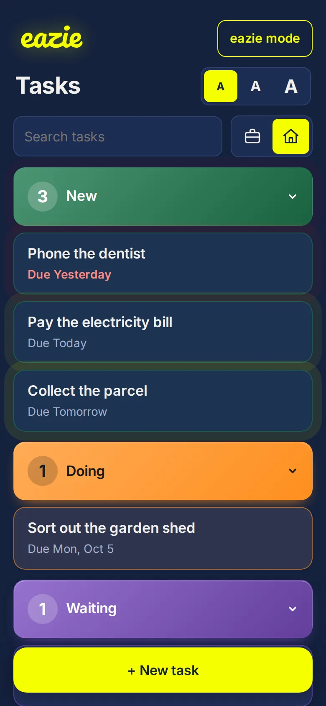
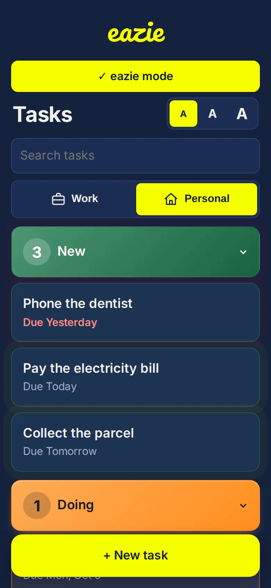

A simple task app for people living with dementia or Alzheimer's
Complicated apps can be overwhelming. eazie is built to be as simple as possible: one calm screen, plain words and nothing to remember.
Why simplicity matters
- One screen. No hidden menus to get lost in.
- Plain words on every button.
- No login. There is no password to forget.
- Names, not just colours. Each category is labelled.
- eazie mode reduces what is on screen and switches off animation.


Ideas for carers and families
Sit down together and add simple everyday things, like watering the plants or ringing a friend. Use a repeat for daily jobs. Add eazie to the home screen so it opens like any other app. Different people need different things, so try it together first.
Please note
eazie is an everyday organiser. It is not a medical device and does not diagnose, treat or monitor any condition. It does not send alarms or notifications, so please do not rely on it for medication or anything safety-critical.
Common questions
Is eazie suitable for someone with dementia?
It is designed to be as simple as possible, but every person is different. Try it together and see whether it suits.
Does it send alarms or reminders to the phone?
No. Things that are due pulse on the screen when it is open.
Does it need a login?
No, so there is no password to remember.